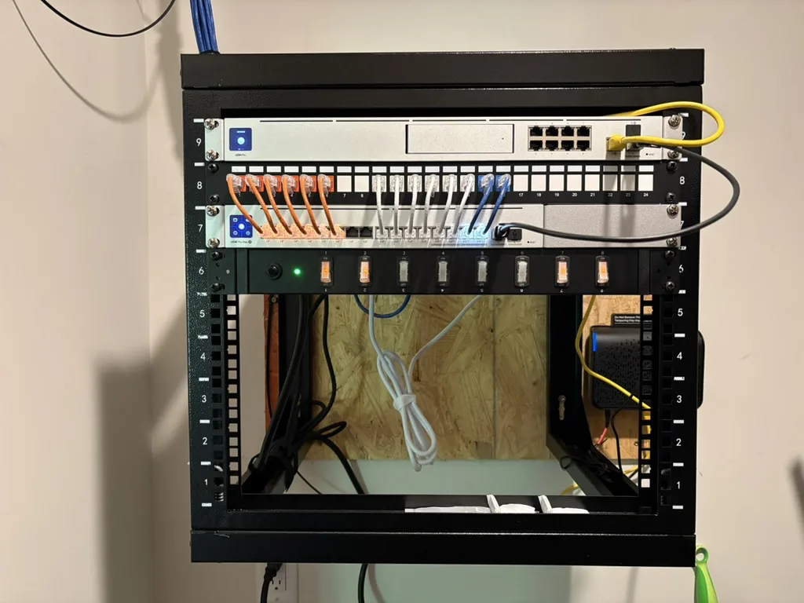
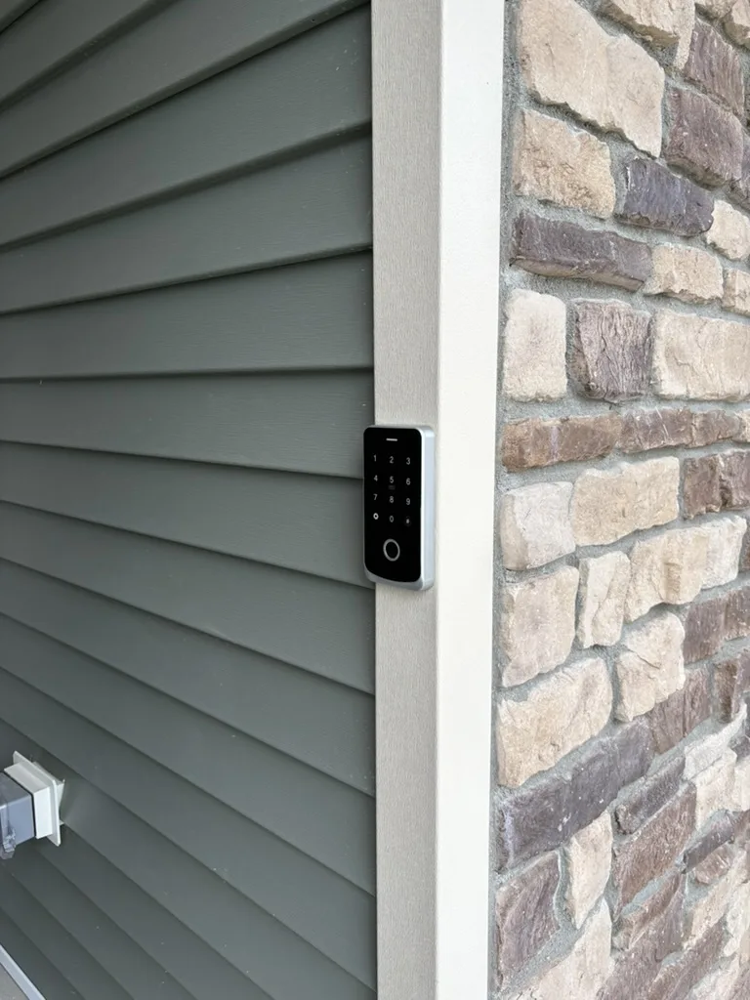
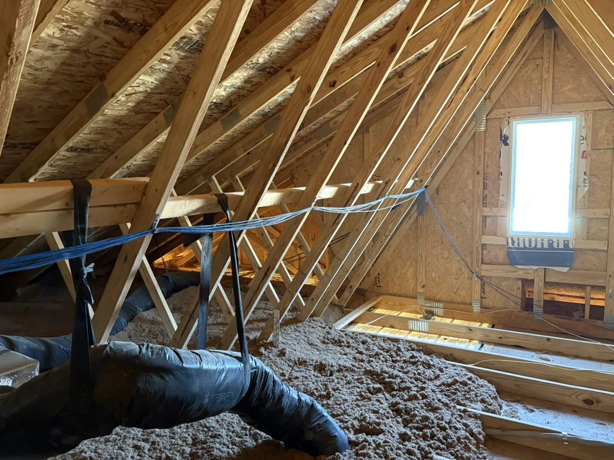

Blyx visual direction studies
Residential technology · Louisville, Kentucky
Technology that feels at home.
Dependable networking, security cameras, and access systems—planned together, installed cleanly, and made simple to use.
Tell us about your project
Serving Louisville Metro and surrounding counties

Completed residential project
Designed around your home
Technology that feels at home.
Dependable networking, security cameras, and access systems—planned together, installed cleanly, and made simple to use.

Access integrated at the entry
Planned behind the walls. Dependable every day.
Technology that feels at home.
Dependable networking, security cameras, and access systems—planned together, installed cleanly, and made simple to use.
Tell us about your project
Louisville Metro and surrounding counties